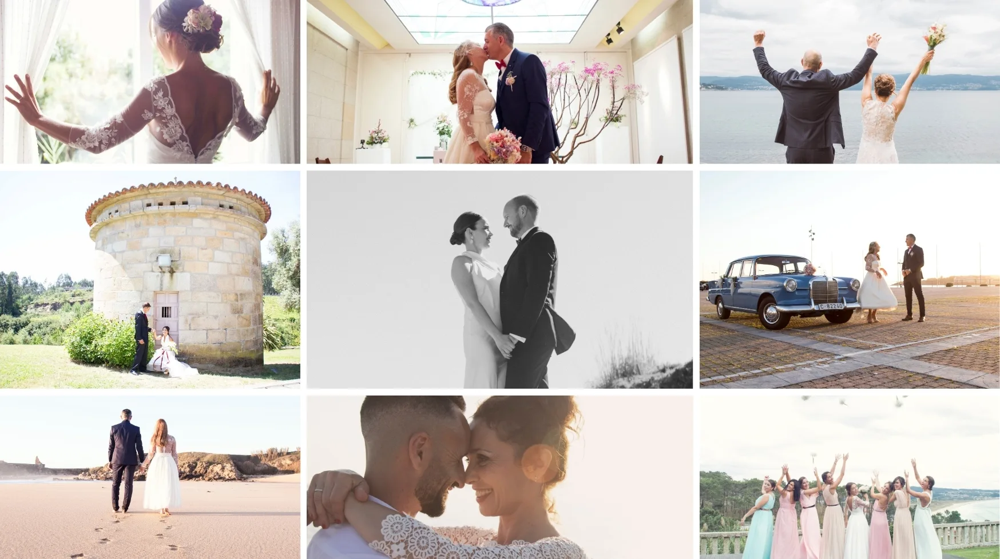

Bodas
Fotografía de bodas
La fotografía de bodas es mucho más que imágenes bonitas. Es memoria, emoción y verdad.
Hay días que no se repiten. Días que pasan rápido, entre nervios, abrazos y miradas que lo dicen todo. Como fotógrafa de bodas, mi trabajo es acompañaros desde la calma, observando sin intervenir, captando cada instante de forma natural y sin poses forzadas.
Me enfoco en documentar vuestra boda tal y como ocurre: los gestos espontáneos, las emociones reales, los detalles que muchas veces pasan desapercibidos. Mientras vivís vuestro gran día, hay una historia completa desarrollándose a vuestro alrededor, y ahí es donde pongo la mirada.
Trabajo la fotografía de boda desde un enfoque documental y editorial, creando imágenes luminosas, cuidadas y atemporales. Cada pareja es única, y por eso cada reportaje de boda también lo es. Antes de fotografiar, necesito entender vuestra historia, vuestros gustos y cómo queréis recordar este día.
Si estáis buscando fotógrafa de bodas en Galicia, mi objetivo es ofreceros un acompañamiento cercano y adaptado, para que podáis disfrutar con tranquilidad mientras todo queda documentado con sensibilidad.
No se trata solo de hacer fotos.
Se trata de contar vuestra historia con autenticidad. Sin artificios. Sin filtros. Solo lo que de verdad importa.

Si has llegado hasta aquí y estáis buscando fotografía de bodas natural, elegante y sin artificios para vuestro gran día, podéis contactar conmigo y solicitar vuestro presupuesto de fotografía de bodas sin compromiso.